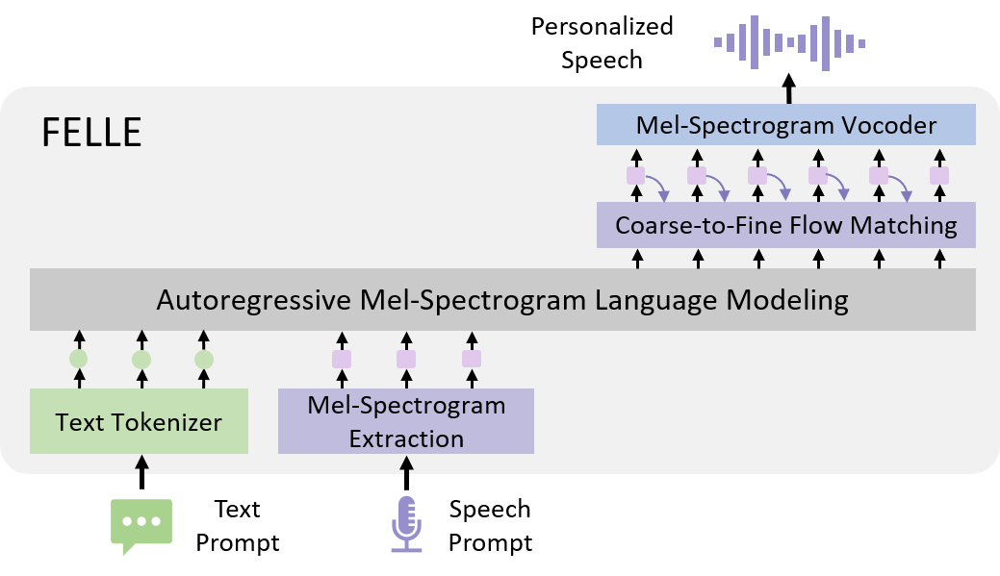

FELLE
Autoregressive Speech Synthesis with Token-Wise Coarse-to-Fine Flow Matching
Abstract. To advance continuous-valued token modeling and temporal-coherence enforcement, we propose FELLE, an autoregressive model that integrates language modeling with token-wise flow matching. By leveraging the autoregressive nature of language models and the generative efficacy of flow matching, FELLE effectively predicts continuous-valued tokens (mel-spectrograms). For each continuous-valued token, FELLE modifies the general prior distribution in flow matching by incorporating information from the previous step, improving coherence and stability. Furthermore, to enhance synthesis quality, FELLE introduces a coarse-to-fine flow-matching mechanism, generating continuous-valued tokens hierarchically, conditioned on the language model's output. Experimental results demonstrate the potential of incorporating flow-matching techniques in autoregressive mel-spectrogram modeling, leading to significant improvements in TTS generation quality
Contents
Model Overview

Figure. The overview of FELLE , which uses a Coarse-to-Fine module to model complex continuous representations.
Zero-Shot Text-to-Speech for Cross-Sentence Task
Samples are from LibriSpeech dataset.
| English Text | Speaker Prompt | MELLE | FELLE |
|---|---|---|---|
| for a long time he had wished to explore the beautiful land of oz in which they lived | |||
| he shall not leave you day or night whether you are working or playing or sleeping | |||
| john taylor who had supported her through college was interested in cotton | |||
| soft heart he said gently to her then to thorkel well let him go thorkel | |||
| and lay me down in thy cold bed and leave my shining lot | |||
| the stop at queenstown the tedious passage up the mersey were things that he noted dimly through his growing impatience | |||
| then he rushed down stairs into the courtyard shouting loudly for his soldiers and threatening to patch everybody in his dominions if the sailorman was not recaptured |
Zero-Shot Text-to-Speech for Continuation Task
Samples are from LibriSpeech dataset.
| English Text | Speaker Prompt | MELLE | FELLE |
|---|---|---|---|
| milligram roughly 128000 of an ounce | |||
| i get tired of seeing men and horses going up and down up and down | |||
| i will show you what a good job i did and she went to a tall cupboard and threw open the doors | |||
| the utility of consumption as an evidence of wealth is to be classed as a derivative growth | |||
| but philip is honest and he has talent enough if he will stop scribbling to make his way | |||
| i made her for only 20 oars because i thought few men would follow me for i was young 15 years old | |||
| they they excite me in some way and i i can not bear them you must excuse me | |||
| it sounded dull it sounded strange and all the more so because of his main condition which was |
Ethics Statement
FELLE is purely a research project. FELLE could synthesize speech that maintains speaker identity and could be used for education, entertainment, journalistic, self-authored content, accessibility features, interactive voice response systems, translation, chat-bot, and so on. While FELLE can speak in a voice like the voice talent, the similarity, and naturalness depend on the length and quality of the speech prompt, the background noise, as well as other factors. It may carry potential risks in the misuse of the model, such as spoofing voice identification or impersonating a specific speaker. We conducted the experiments under the assumption that the user agrees to be the target speaker in speech synthesis. If the model is generalized to unseen speakers in the real world, it should include a protocol to ensure that the speaker approves the use of their voice and a synthesized speech detection model.
This page is for research demonstration purposes only.